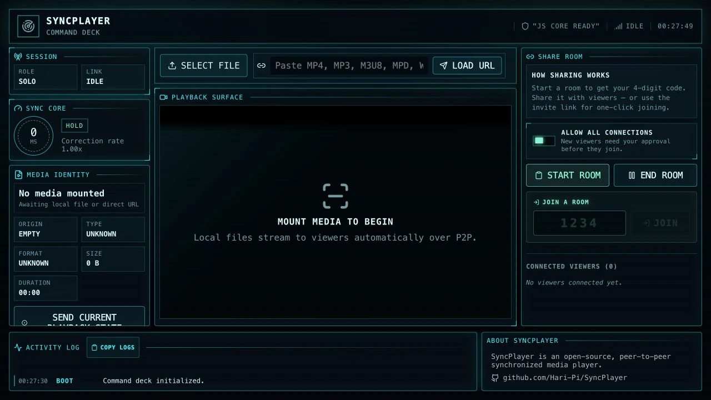
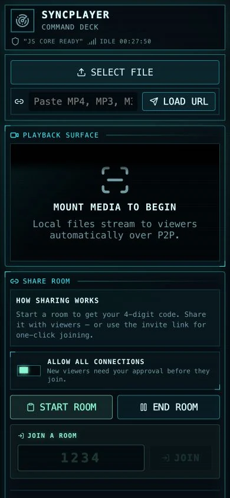

SyncPlayer
A synchronized playback solution built with TypeScript, complementing the Next-Sync-Player ecosystem.
- Role
- Web App Developer
- Ownership
- Independent build
- Scope
- Peer-to-peer media sync
- Delivery
- Live demo + source


The Challenge
Keeping media synchronized across separate browsers is harder than sharing a play or pause command. Each peer has different latency, playback drift, and potentially a different local copy of the file. SyncPlayer explores a peer-to-peer approach that keeps those concerns visible and manageable.
My Role
I designed and implemented the playback interface, WebRTC connection flow, shared message contracts, latency checks, media handling, and synchronization helpers across the project.
What I Delivered
- Web app cockpit: Immersive playback UI, room controls, peer status, logs, and settings.
- WebRTC peer layer: Discovery, manual invites, data channels, latency checks, and sync messages.
- WASM sync core: High-performance file fingerprinting, time math, drift decisions, and media helpers.
- Shared contracts: Message schemas, media identity types, and cross-package utilities.
Key Decisions
- Peer-to-peer transport: WebRTC DataChannels carry playback state and latency pings without routing every sync event through a central media server.
- Shared media identity: File fingerprints and common contracts help peers confirm that they are coordinating the same content.
- Broad media input: Local files, direct media URLs, HLS, and MPEG-DASH are handled through one playback experience.
- Explicit connection state: Pairing, peer health, logs, and settings remain visible so connection problems can be understood instead of hidden.
Outcome
The project delivers a working live demo and public codebase for synchronized playback across local files and online media sources, with the connection and timing architecture exposed clearly enough to extend and debug.
Tech Stack
- Application: React, TypeScript
- Connectivity: WebRTC, DataChannels
- Media: HLS.js, MPEG-DASH support, local file mounting
- Synchronization: WebAssembly helpers and shared message contracts